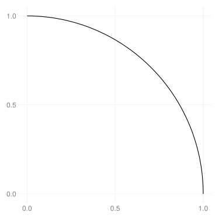
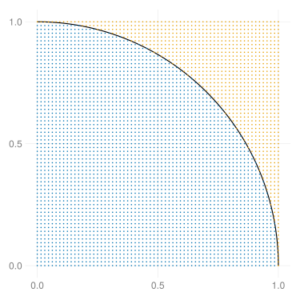
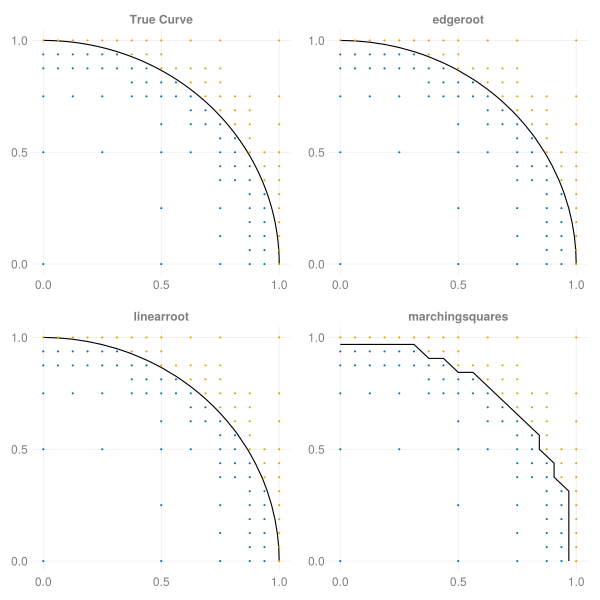

MultiBisect.jl
This Julia package provides a lightweight, idiomatic implementation of the bisection method of root-finding in an arbitrary number of dimensions.
This package exports the BisectionGrid type, which tracks an N-dimensional bisection with only three Array{Bool, N}s and one NTuple{N, R <: AbstractRange}. Using ordinary boolean arrays not only uses minimal memory, but also leverages the magic of base Julia's CartesianIndices to handle any number of dimensions without code modification.
[!IMPORTANT] This package, while functional, is still experimental and subject to change. For a more mature package with similar functionality, see MDBM.jl
Installation
This package is not yet registered, so installation is only available by url from the pkg> prompt:
pkg> add https://github.com/jbshannon/MultiBisect.jlThe Problem
The task of finding the root of a continuous function on an interval where its sign is known to change is a relatively well-known and simple problem, but extending the method to handle two or more dimensions adds complexity. For example, consider the unit circle on the domain $[0,1]^2$.
f(z) = 1 - sum(abs2, z)
circle = map(t -> (cos(t), sin(t)), 0:0.01:π/2)
using CairoMakie
fig = Figure(resolution = (500, 500))
ax = Axis(fig[1, 1])
lines!(ax, circle; color=:black)
fig
The naive, brute-force approach would be to evaluate the function on a grid of points, but many of these evaluations would be far away from the root (in two dimensions, a zero level curve) and not provide any information about the shape of the level curve.
xs = range(0, 1, length=65)
XS = Iterators.product(xs, xs) |> collect
F = f.(XS)
scatter!(ax, XS[F .> 0]; markersize=3)
scatter!(ax, XS[F .≤ 0]; markersize=3)
fig
The level curve must lie between the positive points and the negative points. Two adjacent points that share the same sign do not tell us anything about the level curve, so we could improve our efficiency if we avoided evaluating the function in regions where the sign does not appear to change.
Bisection
Using the bisection method, we can reduce the number of function evaluations by increasing the fineness of the grid only in places we know the function must change sign. This package provides the function bisect(f, grid), which applies the algorithm iteratively to the grid using the function f:
using MultiBisect
BG = bisect(f, (0.0:1.0, 0.0:1.0); iterations=7)
posx, negx = splitsign(BG)
fig = Figure(resolution = (500, 500))
ax = Axis(fig[1, 1])
lines!(ax, circle; color=:black)
scatter!(ax, posx; markersize=3)
scatter!(ax, negx; markersize=3)
fig
The resulting grid is the same size and identifies the exact same sign changes as before, but with far fewer function evaluations – nearly 90% fewer!
julia> BG
BisectionGrid{Float64, 2}
Domain: (0.0:0.015625:1.0, 0.0:0.015625:1.0)
Grid points: 4225
Evaluations: 490
julia> (xs, xs) == domain(BG)
true
julia> efficiency(BG) # percentage of gridpoints not evaluated
0.8840236686390532This efficiency gain is possible because we known that if a square in the grid has vertices that are not all the same sign, the function must change sign somewhere within the square (this is of course only a necessary and not a sufficient condition). The method proceeds by dividing an initial grid "in half" (in the multidimensional sense) at each stage. Since we are working in two dimensions, we break each square into four smaller squares. Before evaluating the function, we check the sign of the function at teh vertices of the larger square. If the function does not change sign, there is no need to evaluate the function within the square. By discarding squares whose vertices all share the same sign at each iteration, we avoid uninformative function evaluations. Here is a step-by-step view of the algorithm:
https://github.com/jbshannon/MultiBisect.jl/assets/46204520/f4fa8893-f073-40f7-8907-84308b91cc65
Interpolation
Once we're satisfied we have enough information about where the function changes signs, we need to convert that information into actual points along the curve. This package examines the edges of the grid: two adjacent points with opposite signs.
julia> edges(BG)
128-element Vector{Tuple{Tuple{Float64, Float64}, Tuple{Float64, Float64}}}:
((0.984375, 0.0), (1.0, 0.0))
((0.984375, 0.015625), (1.0, 0.015625))
((0.984375, 0.03125), (1.0, 0.03125))
((0.984375, 0.046875), (1.0, 0.046875))
((0.984375, 0.0625), (1.0, 0.0625))
⋮
((0.125, 0.984375), (0.125, 1.0))
((0.140625, 0.984375), (0.140625, 1.0))
((0.15625, 0.984375), (0.15625, 1.0))
((0.171875, 0.984375), (0.1875, 0.984375))
((0.171875, 0.984375), (0.171875, 1.0))Since an edge is one-dimensional, we can convert the multidimensional root-finding problem to a series of one-dimensional problems. This packages provides the function interpolate(rootfinder, BG), which takes a function rootfinder – taking an edge as input and returning a root as output – and applies it to each edge in the grid BG. This package currently provides three root-finders for convenience:
edgeroot: solve for the root on the edge with a call toRoots.find_zerolinearroot: create a linear interpolation of the function through the two edge points and compute its rootmarchingsquares: return the midpoint of the edge
Here is a visual comparison of these different interpolation methods:

More dimensions!
Since Julia has the magical CartesianIndices iterator, translating this process out of two dimensions is as simple as changing the dimension of the initial evaluation grid. Here is an example finding roots of the 5d unit hypersphere over the 5d unit hypercube:
julia> grid = ntuple(i -> (0.0:1.0), 5)
(0.0:1.0:1.0, 0.0:1.0:1.0, 0.0:1.0:1.0, 0.0:1.0:1.0, 0.0:1.0:1.0)
julia> BG5 = bisect(f, grid)
BisectionGrid{Float64, 5}
Domain: (0.0:0.0625:1.0, 0.0:0.0625:1.0, 0.0:0.0625:1.0, 0.0:0.0625:1.0, 0.0:0.0625:1.0)
Grid points: 1419857
Evaluations: 396246
julia> interpolate(linearroot(f), BG5)
124020-element Vector{NTuple{5, Float64}}:
(1.0, 0.0, 0.0, 0.0, 0.0)
(0.9979838709677419, 0.0625, 0.0, 0.0, 0.0)
(0.9919354838709677, 0.125, 0.0, 0.0, 0.0)
(0.9818548387096774, 0.1875, 0.0, 0.0, 0.0)
(0.967741935483871, 0.25, 0.0, 0.0, 0.0)
⋮
(0.0625, 0.0625, 0.125, 0.3125, 0.9375)
(0.0, 0.08333333333333333, 0.125, 0.3125, 0.9375)
(0.0, 0.0625, 0.1375, 0.3125, 0.9375)
(0.0, 0.0625, 0.125, 0.3181818181818182, 0.9375)
(0.0, 0.0625, 0.125, 0.3125, 0.9395161290322581)